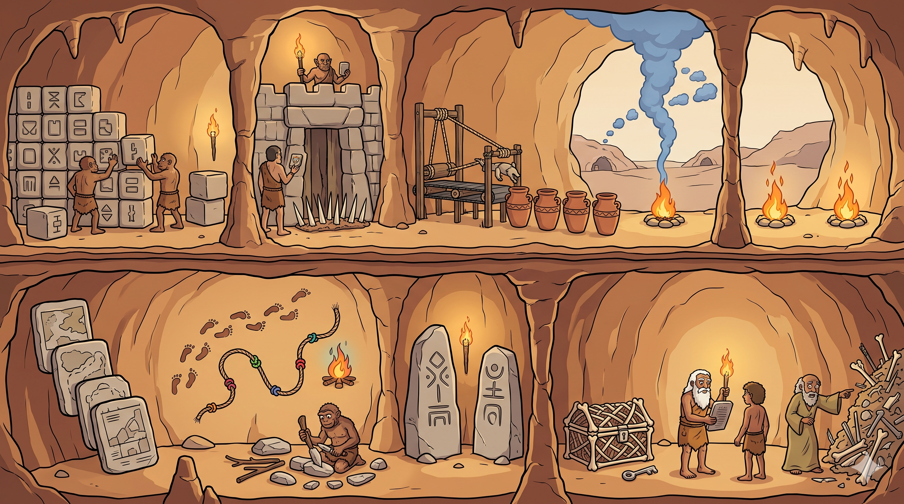

Da coleção de objetos soltos para a figura que ensina por inteiro. A própria ilustração vira a interface — cada região da caverna é um conceito vivo, no seu lugar dentro do sistema.
12 caixinhas SVG abstratas, lado a lado. O aluno decora 12 fatos isolados — sem ver como convivem no mesmo sistema, quem fica perto de quem, o que vira dívida no canto.
Uma cena única. A escalabilidade na entrada, a segurança no portão, a dívida acumulando no fundo. O cérebro aprende por espaço e história — a figura carrega proximidade, fluxo e escala que caixas soltas nunca contam.
Passe o mouse e clique em qualquer setor da caverna — a história inteira mora numa imagem só.
